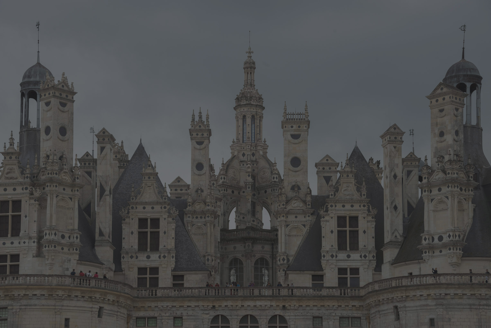

Fotograaf in Kortrijk
Veelzijdige fotoservice — Pasfoto's, communiereportages & meer
Afspraak makenOver mij
Welkom bij Erik Pauwels Fotografie. Als veelzijdige fotograaf in Kortrijk bied ik een breed scala aan fotografische diensten — van pasfoto's tot communiereportages.
Met jarenlaange ervaring zorg ik voor foto's van hoge kwaliteit, altijd met aandacht voor detail en een persoonlijke benadering. Of het nu gaat om een snel pasfoto of een hele communieceremonie, u kan op mij rekenen.
Pasfoto's zijn altijd mogelijk zonder afspraak tijdens de openingsuren. Voor andere diensten kan u eenvoudig een afspraak maken per telefoon of e-mail.
Diensten
Pasfoto's voor alle doeleinden — paspoort, ID-kaart, rijbewijs en meer. Altijd mogelijk zonder afspraak tijdens de openingsuren. Voldoend aan de strengste normen.
Elk jaar fotografeer ik communievieringen in de regio. Mail ons de gegevens en u ontvangt een link naar de webgalerij om foto's te bekijken en te bestellen.
Minder mobiel? Ik kom graag ter plaatse om een pasfoto te maken. Kwaliteit vergelijkbaar met studio-foto's. Groepsafspraken op locatie zijn ook mogelijk.
Geopend van maandag tot zaterdag. Pasfoto's zonder afspraak mogelijk. Voor andere diensten maken we snel een afspraak die past bij uw agenda.
🇧🇪 Nederlands 🇫🇷 Français 🇬🇧 English
Ik spreek drie talen — neem gerust contact op in uw voorkeurstaal.
Veelgestelde vragen
Nee! Pasfoto's zijn altijd mogelijk zonder afspraak tijdens de openingsuren. Kom gerust langs.
Neem contact op voor de actuele prijzen. Ik biedt scherpe prijzen voor zowel individuele fotoals groepskaarten.
Ja, als u minder mobiel bent kom ik graag ter plaatse. Groepsafspraken op locatie zijn ook mogelijk. Neem telefonisch contact op om een afspraak te maken.
Mail mij de gegevens van de viering (kerk, datum, uur, school…) en ik fotografeer de ceremonie. U ontvangt daarna een link naar de webgalerij om foto's te bekijken en te bestellen.
Maandag tot vrijdag: 9u15-12u30 en namiddag op afspraak. Zaterdag: 9u15-12u15 en 14u00-16u30. Zondag gesloten. Uitzonderlijke wijzigingen staan op de website.
Nederlands, Frans en Engels — ik spreek drie talen en help u graag in uw voorkeurstaal.
Contact
Mijn studio bevindt zich aan de Onze Lieve Vrouwestraat in Kortrijk. Kom gerust langs tijdens de openingsuren, of neem contact op voor een afspraak.
| Maandag | 9u15 – 12u30 · 13u45 – 18u30 |
| Dinsdag | 9u15 – 12u30 · namiddag op afspraak |
| Woensdag | 9u15 – 12u30 · 13u30 – 18u00 |
| Donderdag | 9u15 – 12u30 · namiddag op afspraak |
| Vrijdag | 9u15 – 12u30 · 13u45 – 18u00 |
| Zaterdag | 9u15 – 12u15 · 14u00 – 16u30 |
| Zondag | Gesloten |
Pasfoto's altijd mogelijk zonder afspraak tijdens de openingsuren.